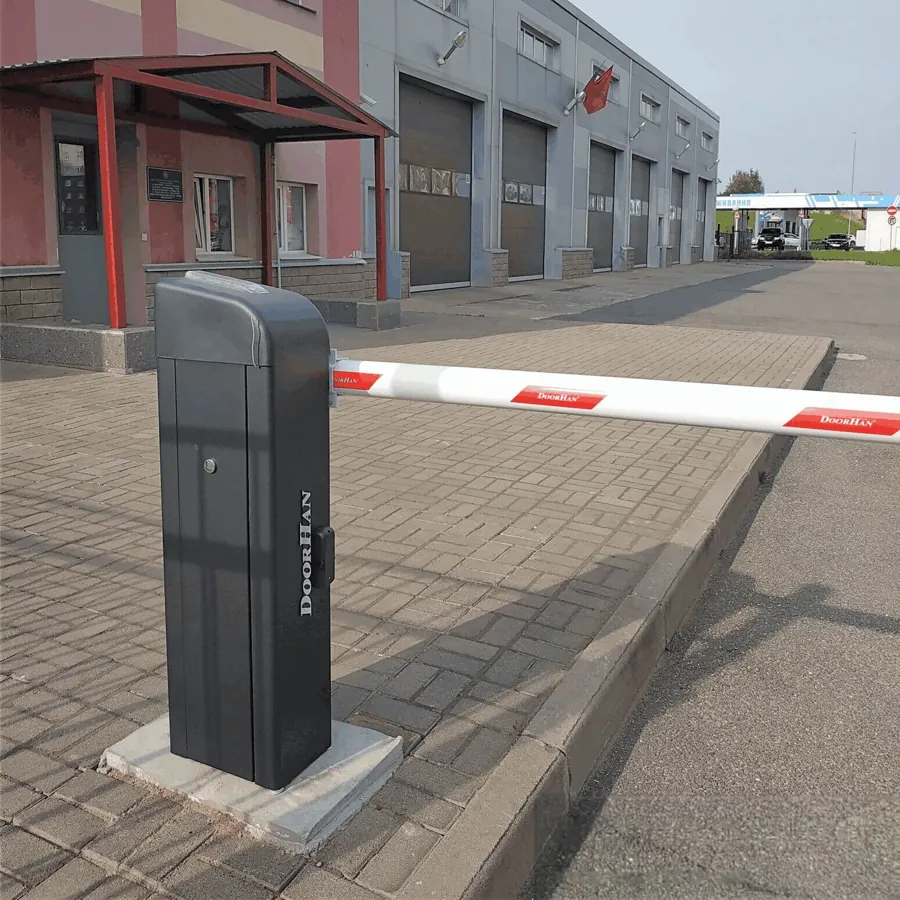
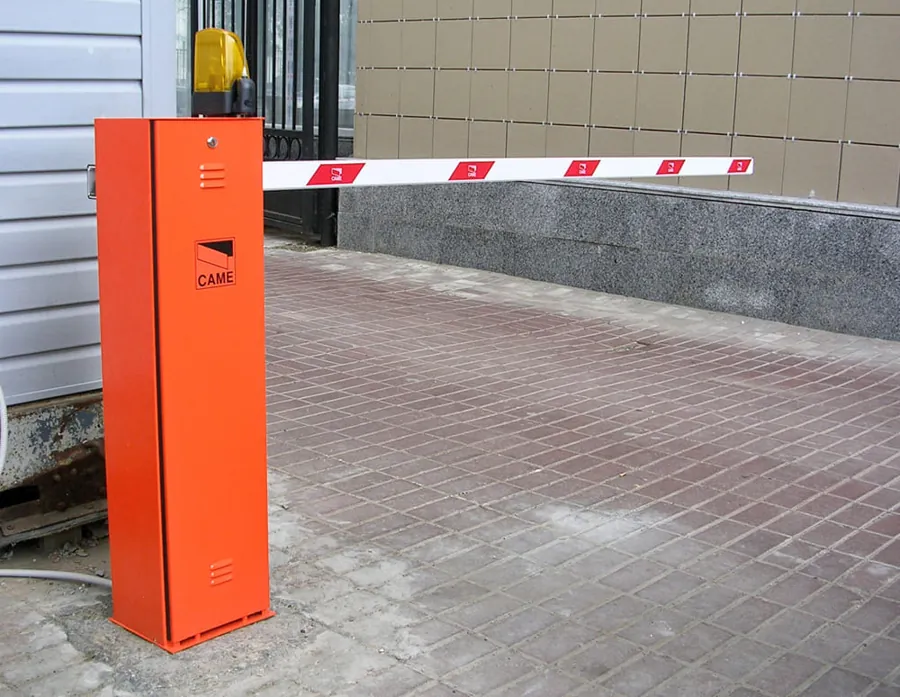
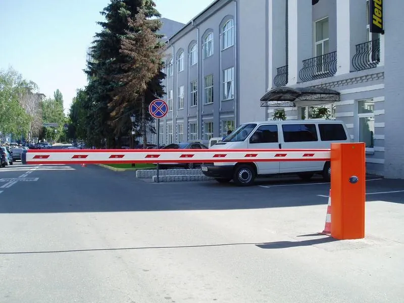
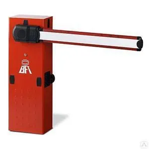
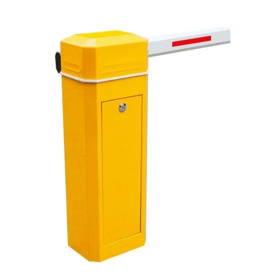

Шлагбаумы: монтаж, ремонт и обслуживаниеШлагбаумдар: орнату, жөндеу және қызмет көрсетуBarriers: installation, repair and maintenance
Выполняем монтаж новых шлагбаумов, срочный и плановый ремонт, сервисное обслуживание действующих. Поставляем комплектующие и пульты. Дополнительно устанавливаем Bluetooth-модуль ZMK и SOS-детектор.Жаңа шлагбаумдарды орнатамыз, қолданыстағыларын шұғыл және жоспарлы жөндеп, қызмет көрсетеміз. Қосалқы бөлшектер мен пульттер жеткіземіз. Қосымша ZMK Bluetooth-модулі мен SOS-детекторын орнатамыз.We install new barriers, carry out urgent and scheduled repairs, service existing ones, supply parts and remotes, and can add the ZMK Bluetooth module and SOS detector.





Работы и услугиЖұмыстар мен қызметтерWorks and services
МонтажОрнатуInstallation
Подбор шлагбаума под условия въезда: длина стрелы, интенсивность движения, пульты, фотоэлементы.Кіреберіс жағдайына сай шлагбаум таңдау: жебе ұзындығы, қозғалыс қарқыны, пульттер, фотоэлементтер.Choosing a barrier for your entrance: boom length, traffic, remotes, photocells.
РемонтЖөндеуRepair
Диагностика и устранение неисправностей привода, платы управления и стрелы.Жетектің, басқару тақшасының және жебенің ақауларын анықтау және жою.Diagnosis and repair of the drive, control board and boom.
ОбслуживаниеҚызмет көрсетуMaintenance
Плановый осмотр, регулировка пружины и концевых выключателей, проверка фотоэлементов.Жоспарлы тексеру, серіппе мен шеткі ажыратқыштарды реттеу, фотоэлементтерді тексеру.Scheduled checks, spring and limit switch adjustment, photocell tests.
КомплектующиеҚосалқы бөлшектерSpare parts
Стрелы, платы управления, пульты, радиоприёмники, фотоэлементы, сигнальные лампы.Жебелер, басқару тақшалары, пульттер, радиоқабылдағыштар, фотоэлементтер, сигнал шамдары.Booms, control boards, remotes, receivers, photocells, warning lights.
Bluetooth-модуль ZMKZMK Bluetooth-модуліZMK Bluetooth module
Открытие шлагбаума из приложения без интернета и SIM-карты.Шлагбаумды қосымшадан интернетсіз және SIM-картасыз ашу.Opening the barrier from the app, no internet or SIM card.
SOS-детектор ZMKZMK SOS-детекторыZMK SOS detector
Акустический детектор сирен: автоматическое открытие шлагбаума для скорой, пожарных и полиции.Сиреналардың акустикалық детекторы: жедел жәрдемге, өрт сөндірушілерге және полицияға шлагбаумды автоматты түрде ашу.Acoustic siren detector: automatic barrier opening for ambulance, fire and police.
Магнитные петлиМагниттік ілмектерInduction loops
Автоматическое открытие шлагбаума на выезд. Подробнее о магнитных петляхШығуда шлагбаумды автоматты түрде ашу. Магниттік ілмектер туралы толығырақAutomatic opening on exit. More about induction loops
Типичные неисправностиЖиі кездесетін ақауларCommon faults
Отметьте, что случилось, и нажмите WhatsApp: отмеченное попадёт в сообщение.Не болғанын белгілеп, WhatsApp басыңыз: белгіленгені хабарламаға қосылады.Tick what happened and press WhatsApp: your choice goes into the message.
Часто задаваемые вопросыЖиі қойылатын сұрақтарFrequently asked questions
Шлагбаумы каких марок ремонтируете?Қандай маркалы шлагбаумдарды жөндейсіз?Which barrier brands do you repair?
CAME, BFT, NICE, DoorHan, FAAC, Alutech, An-Motors, Baisheng и другие. Отправьте фотографию шлагбаума и заводской таблички, и мы определим объём работ.CAME, BFT, NICE, DoorHan, FAAC, Alutech, An-Motors, Baisheng және басқалары. Шлагбаум мен зауыттық тақтайшаның фотосуретін жіберіңіз, жұмыс көлемін анықтаймыз.CAME, BFT, NICE, DoorHan, FAAC, Alutech, An-Motors, Baisheng and others. Send a photo of the barrier and its rating plate and we will assess the work.
Можно ли открывать шлагбаум со смартфона?Шлагбаумды смартфоннан ашуға бола ма?Can the barrier open from a smartphone?
Да. Для этого устанавливается Bluetooth-модуль ZMK. Шлагбаум открывается из приложения без интернета.Иә. Ол үшін ZMK Bluetooth-модулі орнатылады. Шлагбаум қосымшадан интернетсіз ашылады.Yes. We fit the ZMK Bluetooth module and the barrier opens from the app without internet.
Изготавливаете дубликаты пультов?Пульттің көшірмесін жасайсыз ба?Do you copy remotes?
Да. Подбираем совместимый пульт и записываем его в память приёмника шлагбаума. Подробнее — на странице «Пульты».Иә. Үйлесімді пульт таңдап, оны шлагбаум қабылдағышына бағдарламалаймыз. Толық ақпарат «Пульттер» бетінде.Yes. We supply a compatible remote and program it into the barrier receiver. See the “Remotes” page.
Оставьте заявкуӨтінім қалдырыңызSend a request
Опишите задачу и по возможности приложите фотографию оборудования. Специалист ответит и подготовит предложение.Міндетті сипаттап, мүмкіндігінше жабдықтың фотосуретін қоса жіберіңіз. Маман жауап беріп, ұсыныс дайындайды.Describe your task and, if possible, attach a photo of the equipment. A specialist will reply with an offer.
Монтаж и ремонт — Алматы и Алматинская область. Доставка по всему Казахстану.Орнату және жөндеу — Алматы және Алматы облысы. Бүкіл Қазақстан бойынша жеткізу.Installation and repair in Almaty and Almaty Region. Delivery across Kazakhstan.
АлександрАлександрAlexander · +7 707 266 91 54 (WhatsApp) · Telegram @Zmk_kz · zmkalexandr@gmail.com